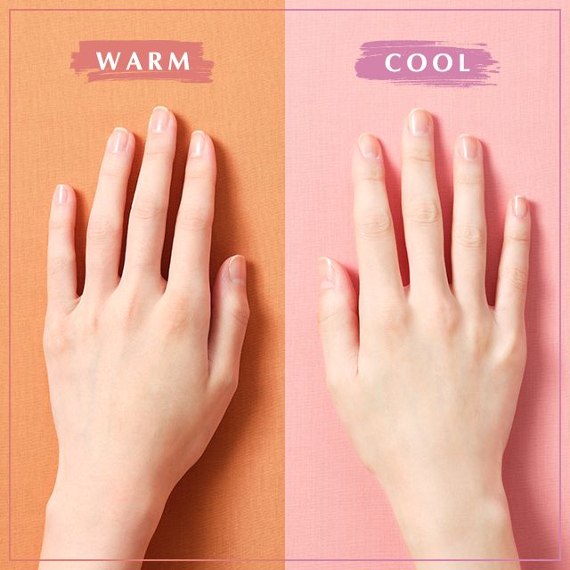

Personal Color
- COOL tone
- WARM tone
WARM TONE
웜톤은 대개 따뜻한 갈색 계열의 옷을 입었을 때 얼굴이 생기 있어 보이고, 오렌지(orange, 주황색)나 코럴(coral, 연한 분홍색) 계열의 색조 화장품이 잘 어울리며, 실버(silver, 은색)보다는 골드(gold, 금색) 액세서리가 자연스럽게 어울리는 특징이 있다.

같은 웜톤이라고 해도 봄웜톤과 가을웜톤은 각각 다른 특징이 있다. 봄웜톤의 경우 명도와 채도가 높은 노란빛이 도는 화사하고 밝은 느낌의 컬러가 잘 어울리며 어두운 색과는 맞지 않는다.
반면 가을웜톤의 경우 명도와 채도가 낮은 노란빛이 도는 흐리고 어두운 느낌의 컬러가 잘 어울리며 파란빛이 도는 색깔은 어울리지 않는다.